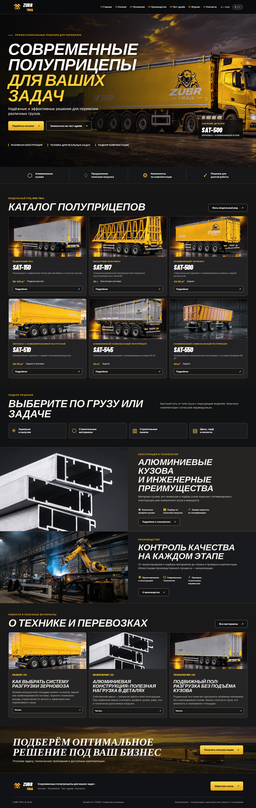
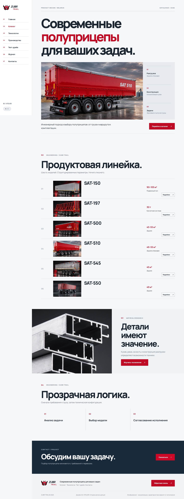
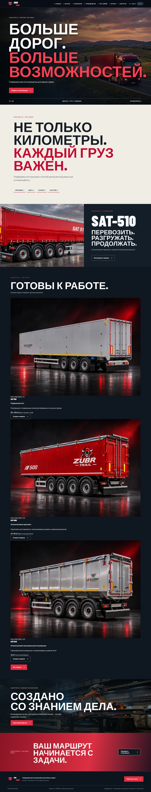
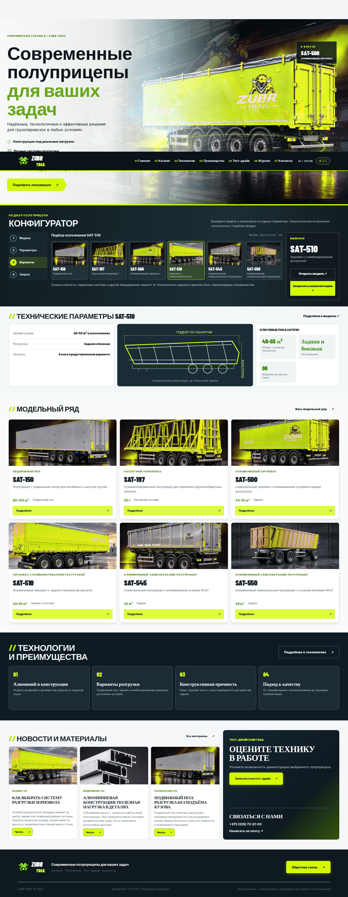

01 / ИНДУСТРИАЛЬНАЯ КАМПАНИЯ
ZUBR FORGE
Гигантская типографика, драматичный красно-чёрный первый экран и полноширинная галерея полуприцепов.
Открыть полноценный сайт ↗Сравните самостоятельные интерфейсы: индустриальная кампания, инженерный каталог, история про перевозки и цифровая продуктовая система. В каждом варианте доступны девять страниц, каталог шести моделей, технические материалы, новости и тест-драйв.

Гигантская типографика, драматичный красно-чёрный первый экран и полноширинная галерея полуприцепов.
Открыть полноценный сайт ↗
Вертикальная боковая навигация, чистые продуктовые таблицы и детальные страницы моделей.
Открыть полноценный сайт ↗
Полноэкранная дорога, главы повествования, фотографии техники и каталог в формате историй.
Открыть полноценный сайт ↗
Панель управления, выбор модели с первого экрана, технические показатели и плотная модульная сетка.
Открыть полноценный сайт ↗Фотографии техники в концепциях — визуализации. Приведённые технические параметры требуют сверки с утверждёнными комплектациями. Письмо тест-драйва формируется в почтовом приложении, без автоматической отправки.